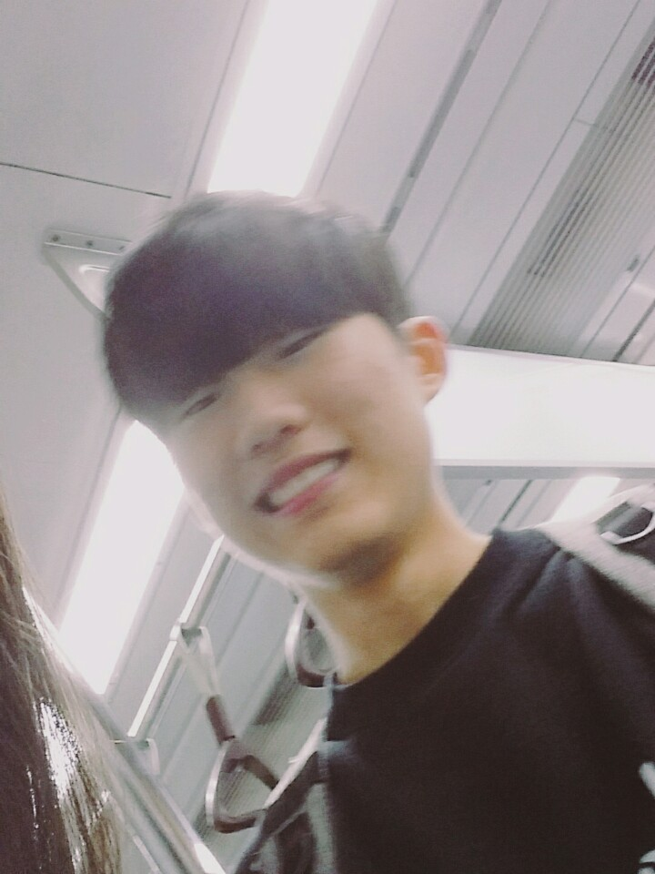
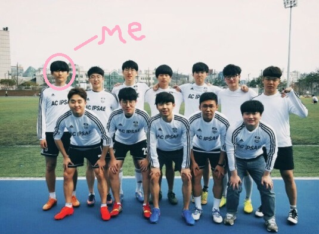

Introduce Myself
|  | 나이: 21세 (만 19세)몸무게: 73kg 키: 183cm 거주지: 안양시 만안구 학교: 연세대학교 컴퓨터 과학과 안녕하세요 저는 연세대학교 컴퓨터 과학과 16학번 안범진 입니다. 인터넷 프로그래밍에 대해 잘 알지 못하고 못하지만 최선을 다해 열심히 하겠습니다. |
취미와 특기 |
|
| 취미: 축구  | 특기: 아무것도 안하고 있기 |
왜 컴퓨터를 하는가정확한 시기와 계기는 모르겠지만 아마 누나가 이화여대 컴퓨터 공학과에 들어간 이후로 부터 컴퓨터를 하고 싶다는 생각이 들었던 것 같습니다. 컴퓨터 공학과에 들어가면 정확히 무엇을 하고 장래는 어떤지 전혀 생각하지 않고 정말 그냥 막연히 아 하고싶다 라는 생각이었습니다. 아마 제가 초등학생때 로봇을 움직이게 하는 프로그래밍을 해봤는데 재밌어서 이런 생각이 들었던 것 같습니다. 하고싶은 것도 정해졌겠다, 저는 고등학교때 열심히 공부를 해서 좋은 학교에 들어가자! 라는 생각을 가지고 공부를 했습니다. 과학탐구영역에서 II과목을 안해서 갈 수 있는 제일 좋은 학교인 연세대학교가 목표였는데 그 목표를 이뤄서 너무 기뻤습니다. 여기 와서 직접 공부를 해보니까 생각했던 것 하고는 조금 다르고 더 힘들지만 그래도 선택한 길인만큼 더욱더 열심히 하겠습니다. |
|